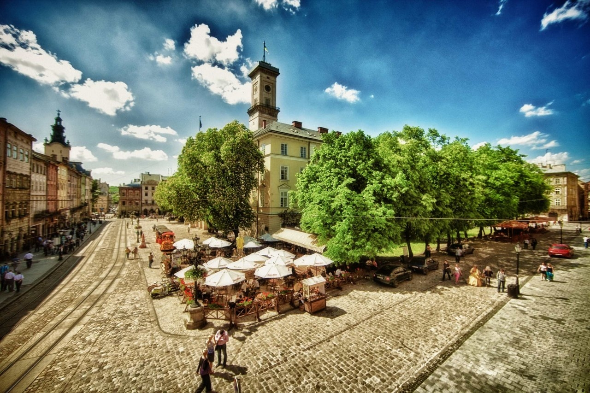
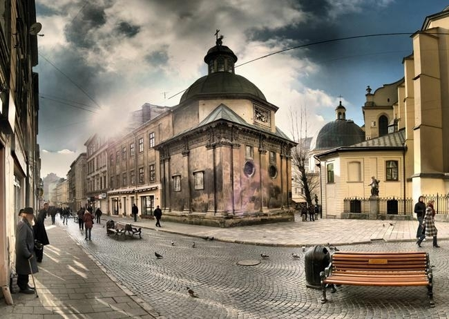
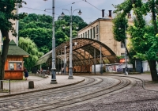
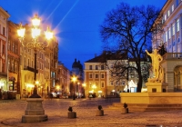
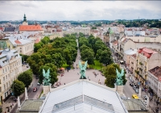

 Львів - місто, яке зачаровує з першого погляду. Кожна вуличка Львова наповнена стародавнім шармом, ароматами кави, духом романтики і архітектурною довершеністю. Кожен його елемент приховує цікаві історії та інтригуючі загадкові легенди. Львів - це культурна столиці України, Львів неповторний та незмінний, Львів - історія, що втілена у силуетах його архітектурних композицій. Це місто, яке "охороняють" кам'яні благородні леви та яке змусить Вас повірити в мрію. Загадковості Львова не має меж.
   
Дата заснування: 1256 рік
День міста: перша половина травня
Населення: ~ 760тис (2012 рік)
Загальна площа: 182 км?
«Місто із запахом кави та шоколаду», «Місто серед дощів», «Серце Галицької землі», «Маленький Париж», «Український Лондон», «Культурна столиця Європи»,«Місто Лева» – це все імена та епітети справжнього галицького міста під назвою Львів, яке розкинулось в мальовничому Передкарпатті.
Вже понад сім століть історія творить цей прекрасно-заворожуючий куточок, що розташований на заході України. Львів вабить своєю неповторністю, своїм живим стилем та особливим колоритом кожної з його вуличок. Місто славиться великою кількістю видатнік місць та пам'яток архітектури, адже не дарма це культурна столиця України.
Стара частина Львова - це серце міста, що і досі задає сучасності ритм історії. Знаменита Площа Ринок ніколи не залишається пустою - тією бруківкою завжди мандрують туристи, поспішають на роботу чи просто відпочивають львів'яни та гуляють закохані пари. Ніколи не залишається поза увагою Квадрат на площі Ринок, в центрі якого розташований знаменитий "львівський Біг-Бен" - Ратуша, історія якої розпочалася ще з початку далекого ХІV століття. За всі свої роки існування Ратуша "пережила" не мало подій, з нею пов'язано багато легенд та цікавих історій. Саму споруду оточуює чорити фонтани з скульптурами Нептуна, Амфітріти, Діани та Адоніса. Площа Ринок - це також архітектурна композиція з разноманітних та унікальних кам'яниць, кожна з яких має свою неповторну історію.
Однією з найзнаменитіших історичних споруд міста є Львівський національний академічний театр опери та балету імені Соломії Крушельницької. Це архітектурне диво неоренесансного стилю вабить львів'ян та гостів міста ще з 1900 року. Протягом всього часу свого існування Оперний театр "пройшов" не малий шлях історією.
Львів приховує ще багато таємничих та загадкових споруд, які доповнюють одна одну. Театри, історичні будівлі, пам'ятники, музеї, кав'ярні, палаци, парки - все це матеріальна незамінна цінність міста, а духовна приховується у кожному елементі Львова - запах кави, привітність львів'ян, шелест листя дерев, "подих" міста, та живий дух історії, що міститься у кожній стародавній споруді. Львів – місто звуків. Саме тут можна почути шум дощу, який вмиває львівську бруківку, музику дзеленчання старенького трамваю, муркотіння львівських кішок навесні та древній дзвін годинника ратуші. Саме тут сіра буденність розмальовується колоритом звуків львівських музик, яких не можна оминути, не зупинившись на хвилину і не прислухавшись до них.
Львів – місто легенд. Тут кожен дворик, кожен будинок та кожна вулиця дихають власними, неповторними легендами, які тягнуться ще з часів Середньовіччя. Варто лише день провести в цьому місті і це вже теж легенда, Ваша власна, яка навіки запам’яталась стінам львівських кам’яниць.
Місто справжніх українських кнайп, дорогих ресторанів та затишних кав’ярень із приємним запахом львівської кави – це все теж Львів. Тут весна настає не лише за календарем: з початком тепла біля кав'ярень та ресторанів з'являються літні майданчики, над столиками яких розкриваються парасольки. Тут холодними осінніми вечорами можна сидіти пити каву, загорнувшись в плед. Історія львівської кави - невід'ємна частина історії самого Львова. Перша кав'ярня в місті була відкрита Юрієм Кульчицьким у далекому 1829 році. Львівські майстри знають безліч рецептів приготування цього запашного гарячого напою, а головне, що все це вони роблять з душою для Вас. Даруючи близьким кавові зерна зі Львова, Ви даруєте шматочок цього дивовижного міста і його історії.
Львів – це місто, в якому вдало переплелося сьогодення і середньовіччя, вся суворість галицького князівства та романтика сучасності, шалений ритм життя та одночасне відчуття спокою, це місто гордих галицьких князів та сонних левів, котрі спокон віків несуть свою кам’яну варту та оберігають спокій мешканців та гостей загадкового міста. Львів’яни першими зварили пиво, винайшли гасову лямпу та проклали найширші тротуари в Європі.
Це "країна" солодощів, чорного та молочного, в плитках та гарячого шоколаду. Цим містом можна захоплюватися в будь-яку пору року та в будь-який час доби. Львів - це жива історія в сьогоденні. Описувати видатні місця Львова можна вічно, але слова - це лиш слова, його треба побачити на власні очі та відчути цей неповторний ритм, ритм величного міста Львова. Ви ще й досі сумніваєтесь чи варто відвідати Львів?
У Львові є багато готелів, де можна залишитися на ніч, варіантом є також подобова оренда квартир, якщо ви подорожуєте великою компанією. Львів - місто "компактне", а особливо стара частина, тому краще за все насолоджуватися прогулянкою пішки, що дає змогу детальніше ознайомитися з кожною спорудою та відчути загадковий чаруючий "подих" Львова.
Добратися до Львова можна як автомобільним, так і залізничним шляхами. Відстань від Києва становить: - залізницею 575 км - автошляхами 537 км
+38 032 254 60 79 Львівська міська рада пл. Ринок, 1, м. Львів, Україна, 79006
Автори: Катерина Амеліна, Надія Кріль